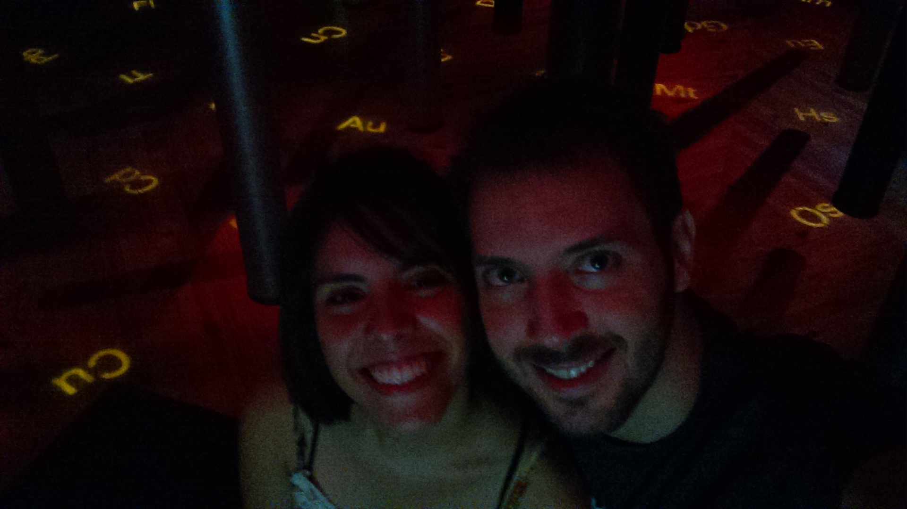
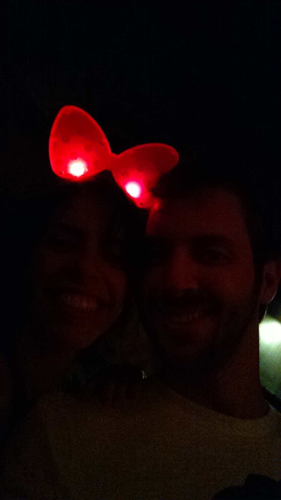
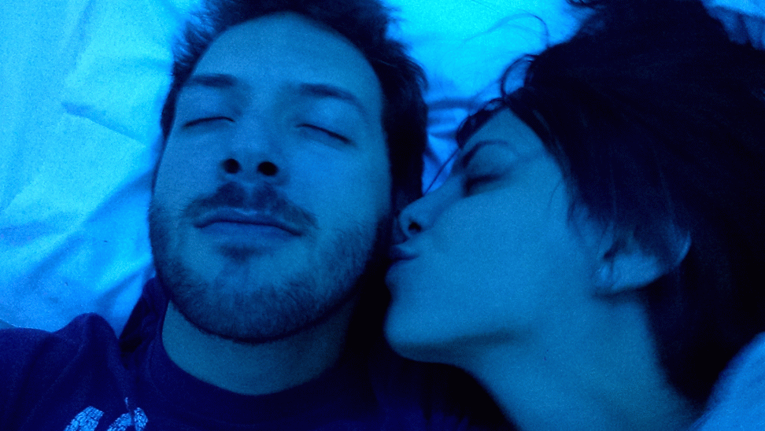
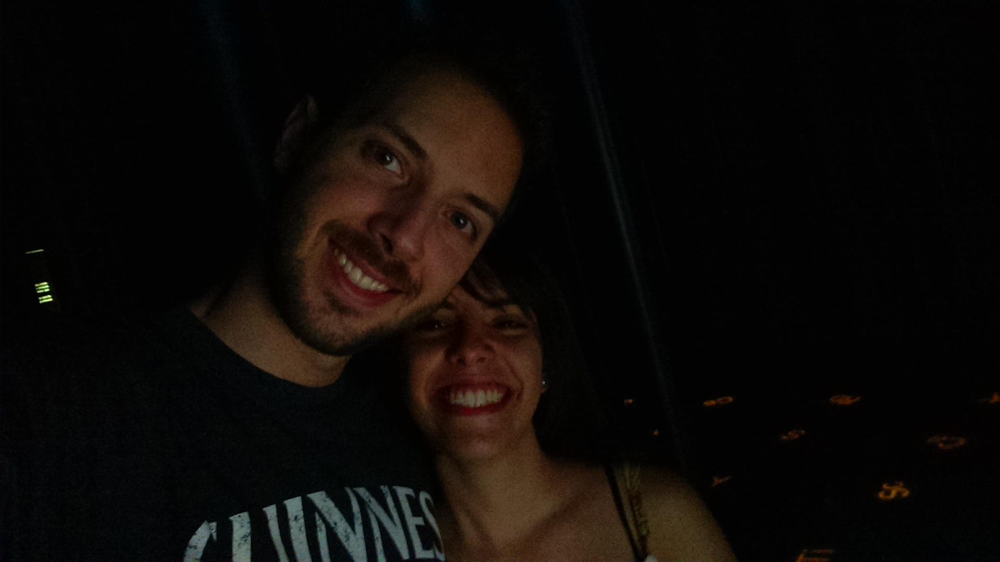

-
Um pouco de mim
Aqui vou falar um pouco das minhas músicas favoritas e quando eu gosto de escuta-las.
O bom e velho Rock and Roll
Essas são algumas das minhas músicas fávoritas... não precisa escutar todas... mas esta ai a minha listinha...O Rock não tem hora nem lugar de escutar... toda hora é hora, todo lugar é lugar... Aqui vai um gostinho só das minhas favoritas haha, não espero que você goste de todas.... Mas é um pouquinho de mim.... Nem todas são rock.. mas aqui um pouco das que eu gosto
Foo Fighters - The Best Of U
Foo Fighters - The Pretender
Foo Fighters - These Days
Foo Arctic Monkeys - Fluorescent Adolescent
Phillip Philips - Gone, Gone, Gone
Flo rida - Good Feelings
Audioslave - Like a Stone
Audioslave - I Am the Highway
Essa música você não esta entendendo... adoro ela...Audioslave - Shadow Of The Sun
Essa aqui também... :)Mllk Chance - Stolen Dance
Johnossi - Man Must Dance
Queria te falar que eu sou meio maluquinho as vezes... As vezes eu não sei expressar o que quero...
Mas de uma coisa eu tenho certeza... eu amo você, e te acho a pessoa mais linda desse mundinho pequeno nosso...
Você vem alegrado meus dias cada dia mais...
Um pouco de você
Amor... o que pude perceber de você nesse tempo que estamos juntos...
É que você é uma pessoa muito boa...
Você sempre está pensando no proximo... Sempre pensa em ajudar aqueles que precisam
Você é doce e meiga... Linda e maluquinha
Você tem ótimos amigos que te amam muito...
E você pode ter certeza... que você me tem... por completo... e eu te amo mais ainda...
Pelo que eu percebi... do que você gosta
All Of The Stars
All Star Azul
Linda essa música... assim como vocêChalala
Hahaha Essa aqui você ama né Ali..Cris..Cigarras.mp3
Corazon partido.mp3
Doce vampiro
Locked Out of Heaven
Vivir Mi Vida
Um pouco de nós
Cris... nós passamos por muita coisa...
Foi um longo caminho que construimos ate chegar nesse ponto que estamos
Nos rimos muito... brincamos muito... fizemos muitas loucuras
Você me levou a lugares que eu não estava acostumado a ir
Você me ensinou a amar novamente... algo que eu a muito... andava desacreditado
Todos esses dias com você... me fizeram querer ser melhor

Eu comecei a acordar cedo, entrei na academia, procurei coisas novas para mim
E isso tudo eu vejo como positivo
Não sei se eu pude te acrescentar algo positivamente... Mas eu acho que de alguma forma
Você esta curtindo tudo isso... e está nessa comigo
Acho que meu novo lugar favorito de BH, é a rua de trás da sua casa
Foi la que eu passei alguns dos melhores momentos da minha vida... fazendo absolutamente nada
Isso é incrivel... ficar atoa com você... chamegando... conversando... filosofando...
Isso pra mim tem sido espetacular... e fazer tudo isso com você tem sido ótimo
Eu não consigo expressar tudo o que sinto por você nessa "carta"
Mas acredite que faço ela com todo meu amor e carinho... tenho muito respeito por você
Hoje somos namorados haha
Uma jornada longa... cheia de altos e baixos... mas que no fim... está dando certo
Como você costuma dizer... nós somos um errado que deu certo hehe
Cris... vou citar Vinicius de Moraes... em um dos sonetos que eu mais gosto...De tudo ao meu amor serei atento
Antes, e com tal zelo, e sempre, e tanto
Que mesmo em face do maior encanto
Dele se encante mais meu pensamento.
Quero vivê-lo em cada vão momento
E em seu louvor hei de espalhar meu canto
E rir meu riso e derramar meu pranto
Ao seu pesar ou seu contentamento
E assim, quando mais tarde me procure
Quem sabe a morte, angústia de quem vive
Quem sabe a solidão, fim de quem ama
Eu possa me dizer do amor (que tive):
Que não seja imortal, posto que é chama
Mas que seja infinito enquanto dure.

Sei que essa é a coisa mais melosa que você ja viu... haha me desculpe por isso...
Mas perto de você... e por você... é como eu me sinto... e eu gosto de me expressar assim...
Cristianne Fubino Fernandes... eu amo você... Conte comigo...
Minha paixão hehe... minha coisinha... minha nada... minha tudo...
Sinto saudades de você ate quando estou com você... sentimento difícil de explicar
Nossa Primeira foto... depois de tanto tempo juntos... essa foto aconteceu... no lugar mais especial...
Relicário
De Janeiro à Janeiro.mp3
Você pode ter certeza... eu vou te amar... de janeiro à janeiro... até o fim do mundo...Ali
Mais Ninguém
Pensa em Mim
Eu penso em você o tempo todo, todo o tempo, o dia inteiro...Tunel do Tempo
Segredos